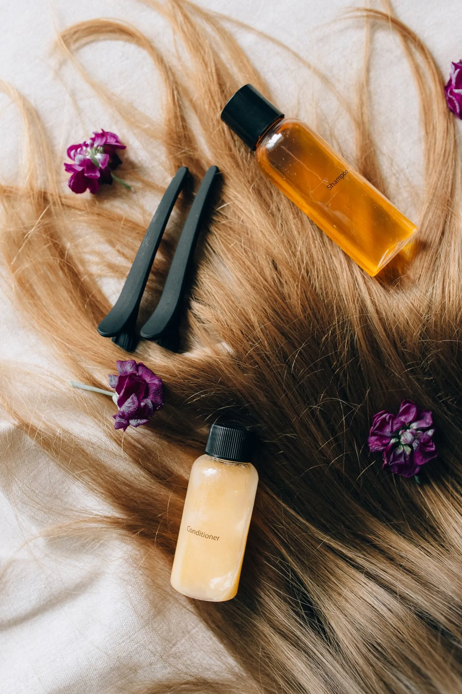
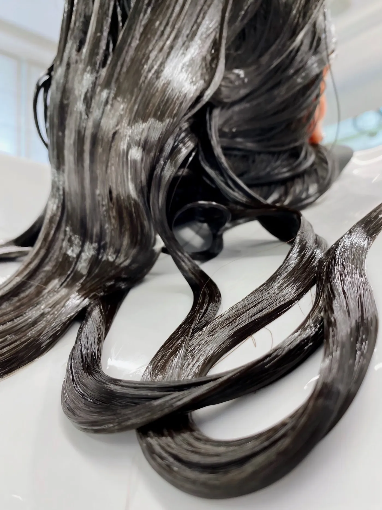
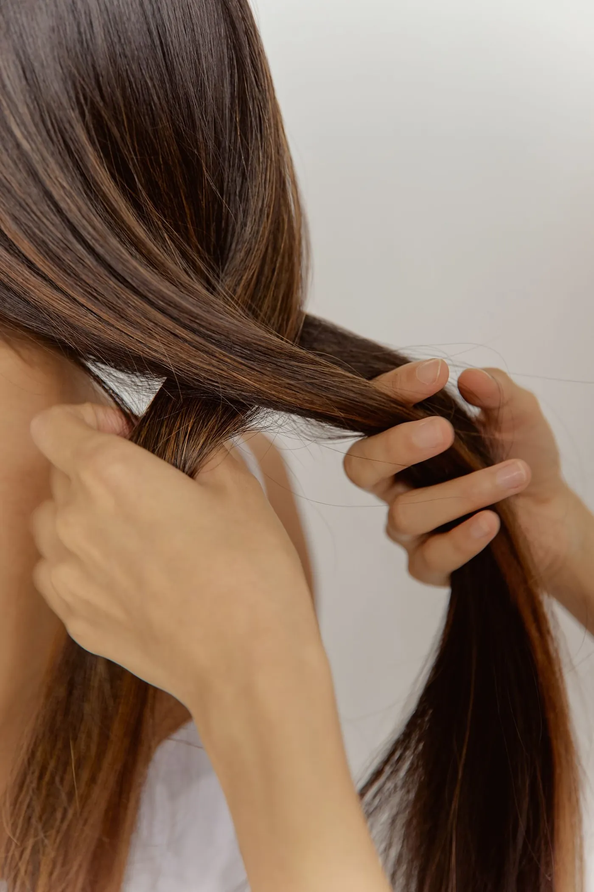
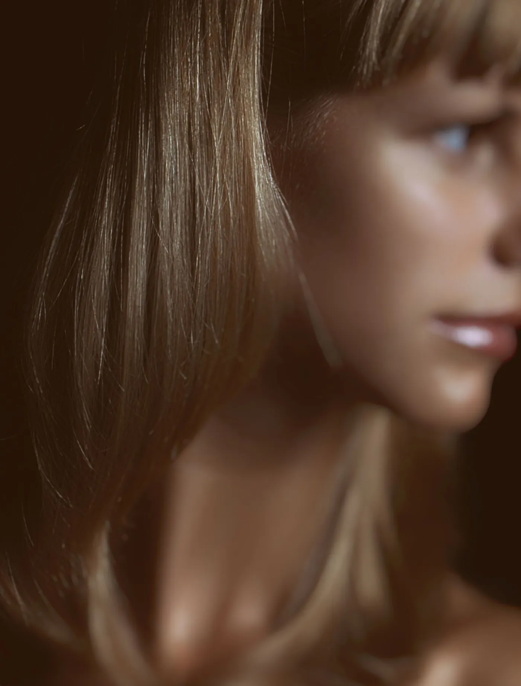
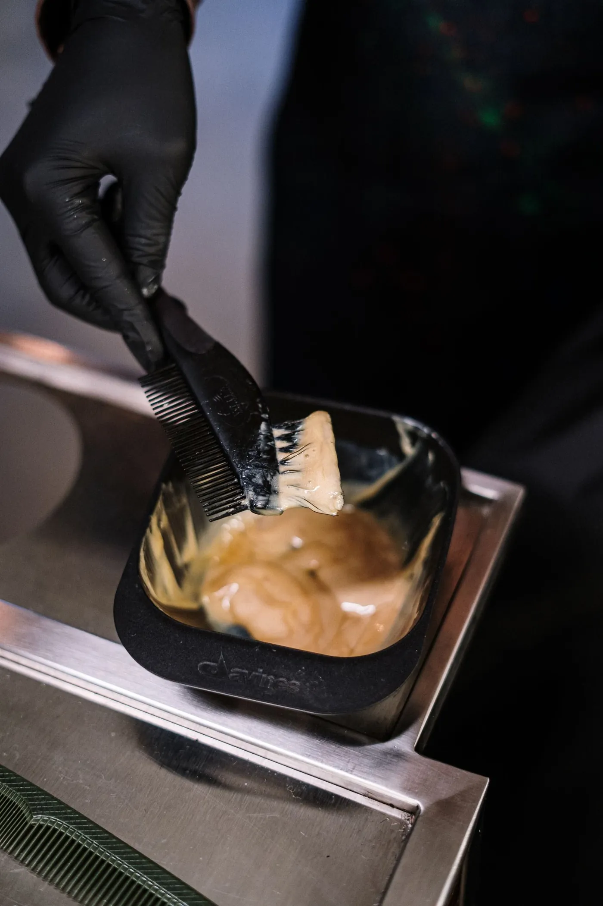
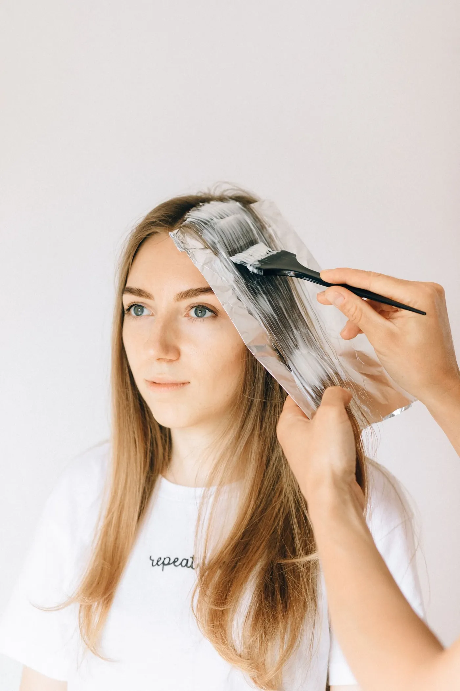
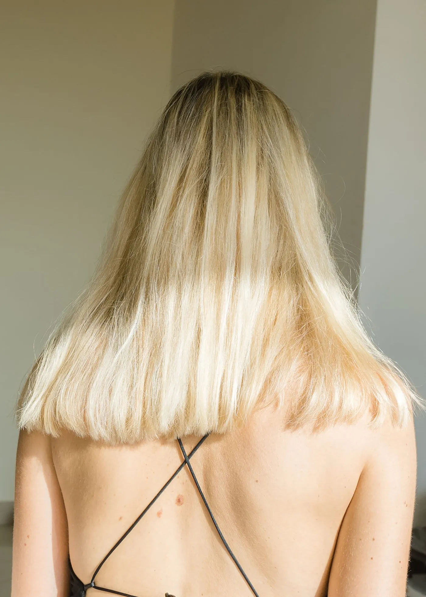

Блог про волосся
Про процедури студії, домашній догляд і фарбування - простими словами, на основі порад дерматологів і наукових публікацій.

Кератинове вирівнювання: як воно працює і чому важливо знати склад
Що дає кератин, звідки взялися розмови про формальдегід і які питання поставити майстру перед процедурою.

Ботокс для волосся: жодного ботулотоксину, лише глибокий догляд
Назва лякає, але уколів тут немає. Розбираємо, що насправді входить у «ботокс» і чим він відрізняється від кератину.

Нанопластика і перманентне вирівнювання: що варто знати перед процедурою
Тривале вирівнювання навіть для дуже кучерявого волосся. Що каже прайс студії і що з'ясували нефрологи щодо кислотних складів.

Реконструкція волосся: амінокислоти, ліпіди, протеїни - що вони дають
Холодне відновлення без вирівнювання, тотальна реконструкція і чому ці процедури так люблять блондинки.

Полірування і посічені кінчики: чесно про те, що можна виправити
Чому жодна сироватка не склеїть кінчики назавжди і як полірування допомагає зберегти довжину.

Пілінг шкіри голови: коли він потрібен і кому варто бути обережними
Залишки засобів, себум і лупа: що дає очищення шкіри голови і коли краще спершу піти до дерматолога.

Як правильно мити й доглядати волосся: поради дерматологів
Шампунь - на корені, кондиціонер - після кожного миття, а рушник - без тертя. Прості правила, які працюють.

Фен, праска і термозахист: як укладати волосся без шкоди
Що показало дослідження про фени і чому сушити волосся природно - не завжди найкращий варіант.

Фарбування без сюрпризів: тест на алергію і правило трьох тонів
Чому тест роблять за 48 годин, при чому тут «чорна хна» і які симптоми означають, що потрібна допомога.

Hair contouring: як колір волосся «підсвічує» обличчя
Техніка з принципами контурингу в макіяжі: де розмістити світло, а де тінь - залежно від форми обличчя.

Як повернути до життя пошкоджений блонд
Що освітлення робить з волоссям, навіщо bond builders і як доглядати блонд, щоб він залишався м'яким і блискучим.
Готові до волосся, яке хочеться торкатися?
Напишіть Олені в Instagram: вона подивиться фото вашого волосся, порадить процедуру і підбере зручний час.